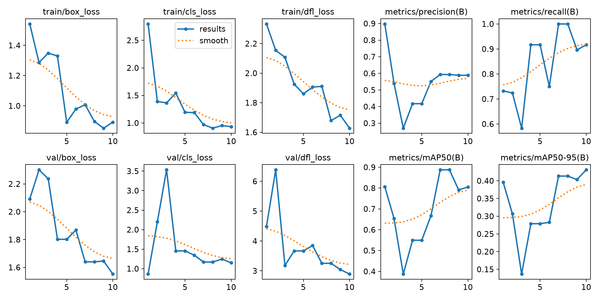
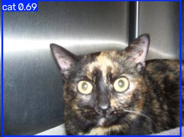
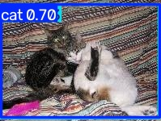
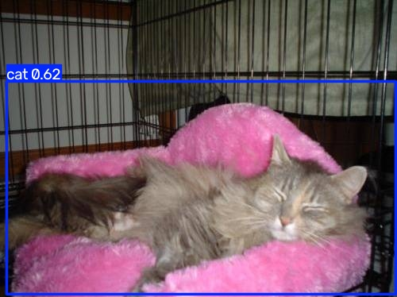
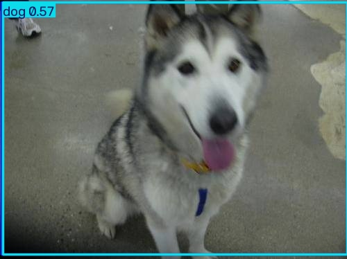
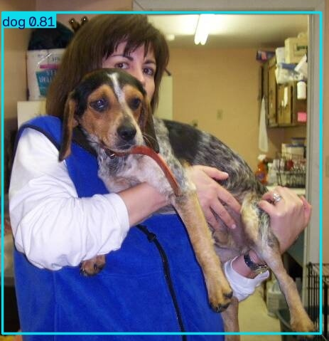
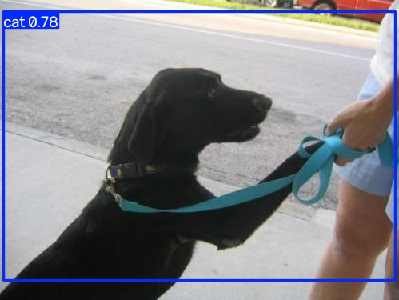

Laboratory 6
YOLO Object Detection
Pretrained inference, custom annotation, fine-tuning, and evaluation with YOLO11 nano.
The document filename says YOLOv8; its activity body specifies YOLOv11. This report follows the body. This completed run used 10 epochs instead of the document's 100-epoch example.
Objectives
Gain hands-on object detection experience; prepare and annotate a custom dataset; train and fine-tune a YOLO model; and interpret training and evaluation metrics.
Part 1 Real time pretrained detection
The OpenCV webcam program loads yolo11n.pt and draws predicted classes, confidence scores, and boxes. The recorded detection speed was 13.92 FPS, excluding capture/display and the first five warm-up frames. Browser inference speed depends on the visitor's device and is measured separately. Different lighting, distance, and object visibility can affect detections; no numerical webcam accuracy was measured.
Part 2 Custom dataset preparation
Sixty photographs (30 cats and 30 dogs) were manually annotated and split into 42 training, 12 validation, and 6 test images. Labels use class_id x_center y_center width height with normalized coordinates and classes 0 = cat and 1 = dog. Each image has a matching label file. The browser editor is an additional way to draw and export genuine labels.
Part 3 Custom training
The model was fine-tuned from pretrained YOLO11 nano weights using 640-pixel inputs, batch size 4, seed 42, and 10 epochs. The training script enforces a maximum of 10 epochs. The best checkpoint was selected using validation performance. Training box/class/DFL losses decreased, while validation mAP50 changed from about 80.67% to 80.47%.

Part 4 Evaluation and inference
The trained best checkpoint was evaluated on validation and test partitions and used on all six held-out test photographs. Values below are the genuine saved Ultralytics results, separate from live browser fixed-threshold precision/recall.
| Metric | Validation · 12 images | Test · 6 images |
|---|---|---|
| Precision | 58.90% | 73.04% |
| Recall | 91.67% | 83.33% |
| mAP50 | 80.47% | 80.46% |
| mAP50-95 | 43.09% | 35.03% |
The custom YOLO11 nano model was trained for 10 epochs on 42 training images, with 12 validation images and 6 held-out test images. Test precision was 73.04%, recall 83.33%, mAP50 80.46%, and mAP50-95 35.03%. Training box loss decreased from 1.54 to 0.89; validation mAP50 stayed near 80%. False detections, missed animals, and localization errors remain. Six test images provide limited evidence of generalization.






Laboratory question and answer
What is object detection in computer vision, and how does it differ from image classification? Explain using a real-world example.
Object detection identifies objects and locates each one using a bounding box and class label. Image classification assigns a category to the whole image without locating individual objects. For example, classification might label a photograph "cat", while detection can identify two cats and one dog and draw a separate labeled box around each animal.
Conclusion
The activity demonstrates the complete path from a pretrained detector to a custom cat/dog experiment. Correct annotations, separate data partitions, saved checkpoint selection, and quantitative evaluation are essential. The difference between mAP50 and mAP50-95 shows that locating objects precisely remains a challenge.
Sources and reproducibility
Primary source: CSST106_Lab_Experiment_06_YOLOV8_Object_Detection.docx. Original Python scripts are in the Python kit. Genuine history, images, and annotations are documented in SOURCE_MAP.md. Technical references: Ultralytics YOLO11, validation documentation, and ONNX Runtime Web.